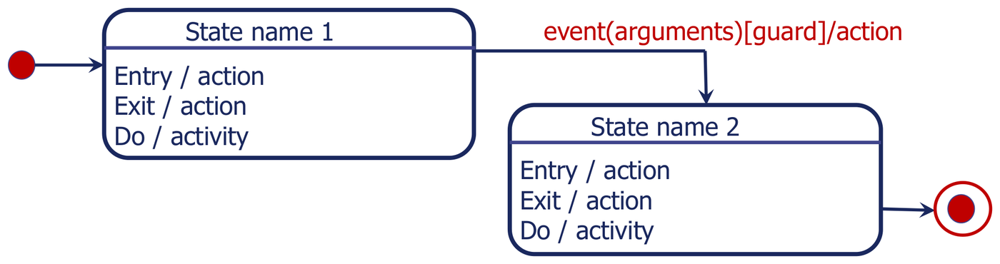
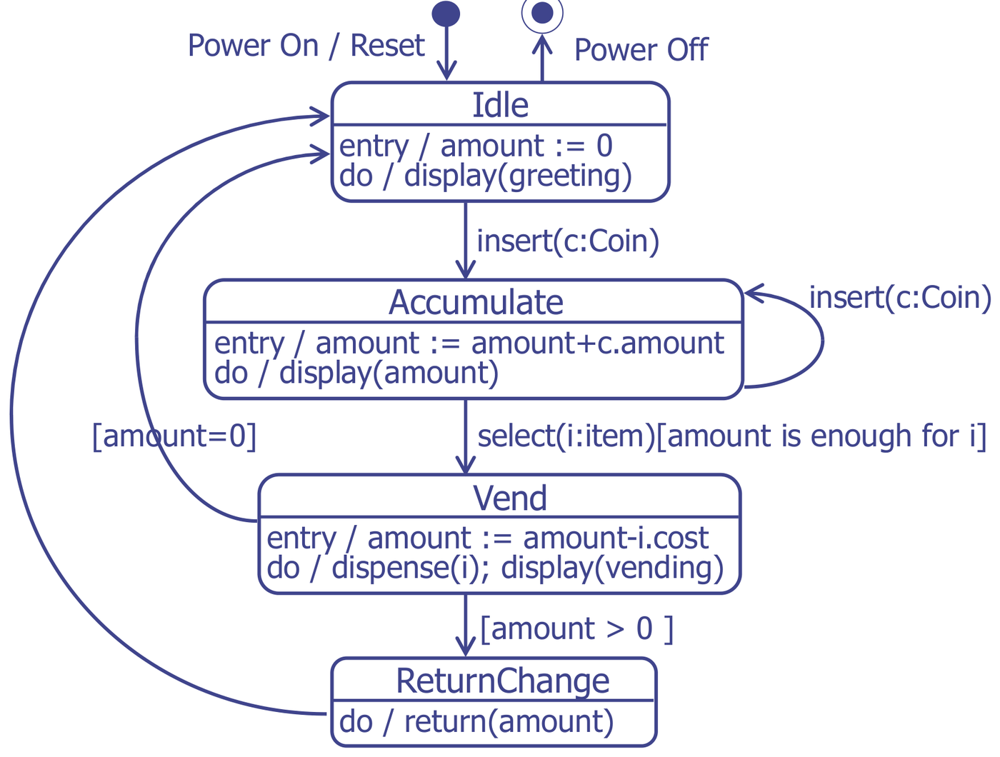
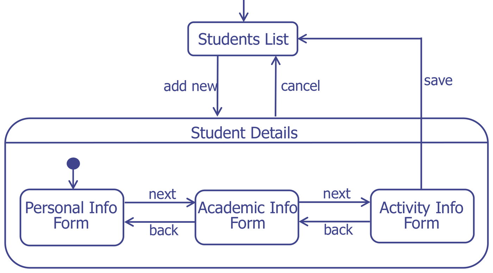
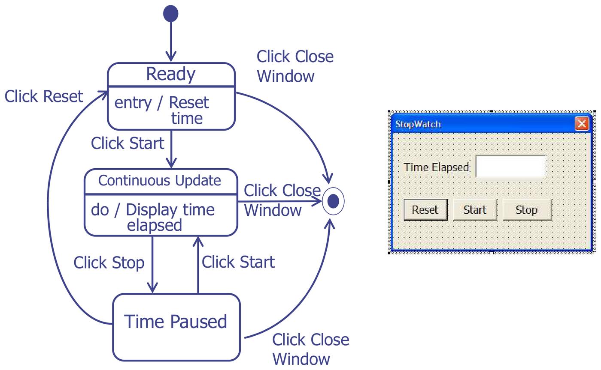
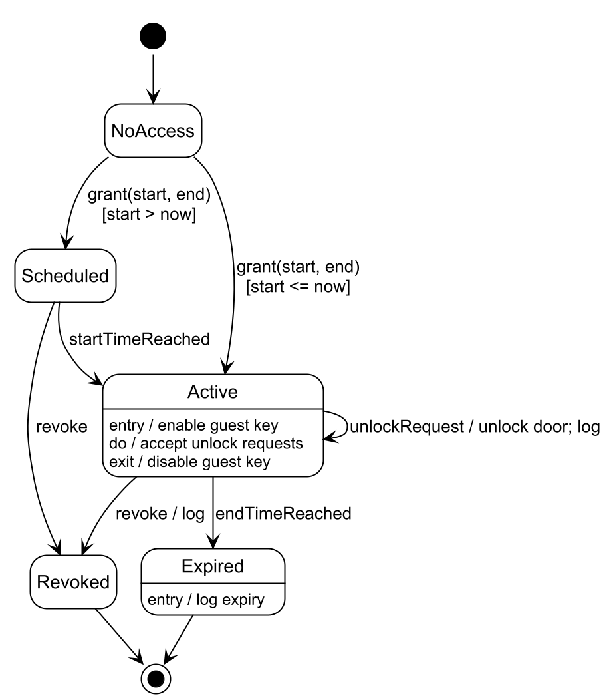
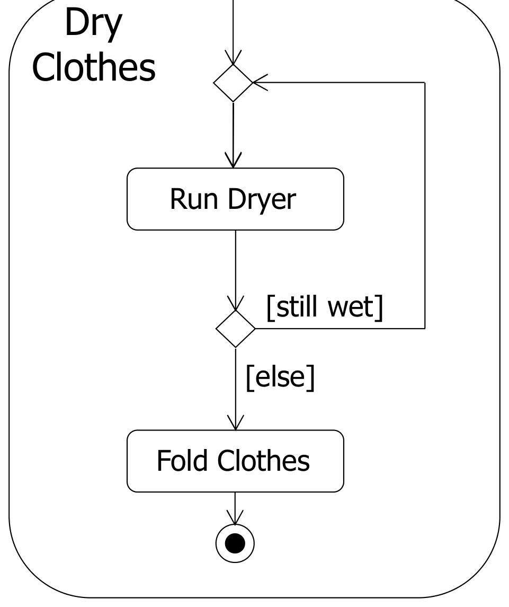
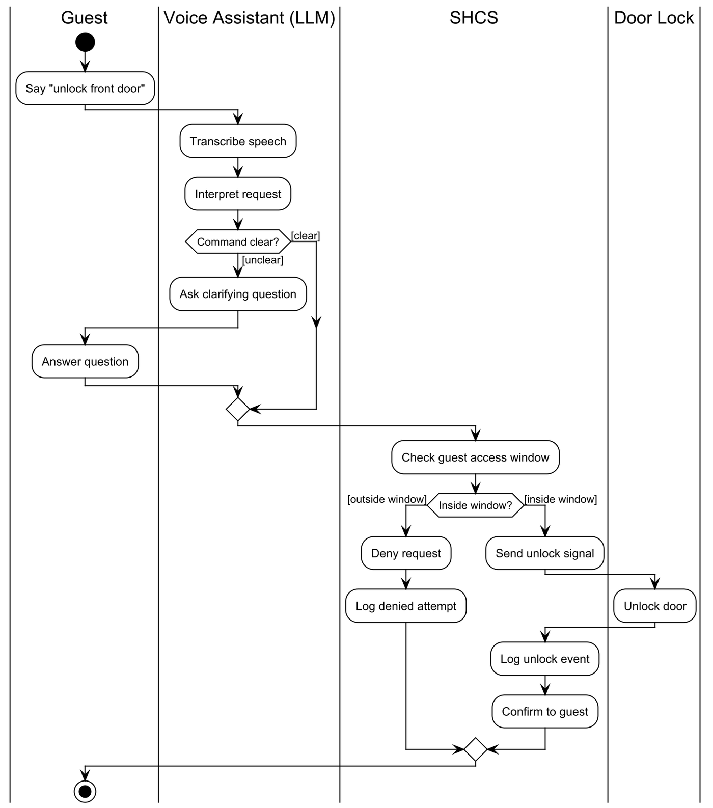
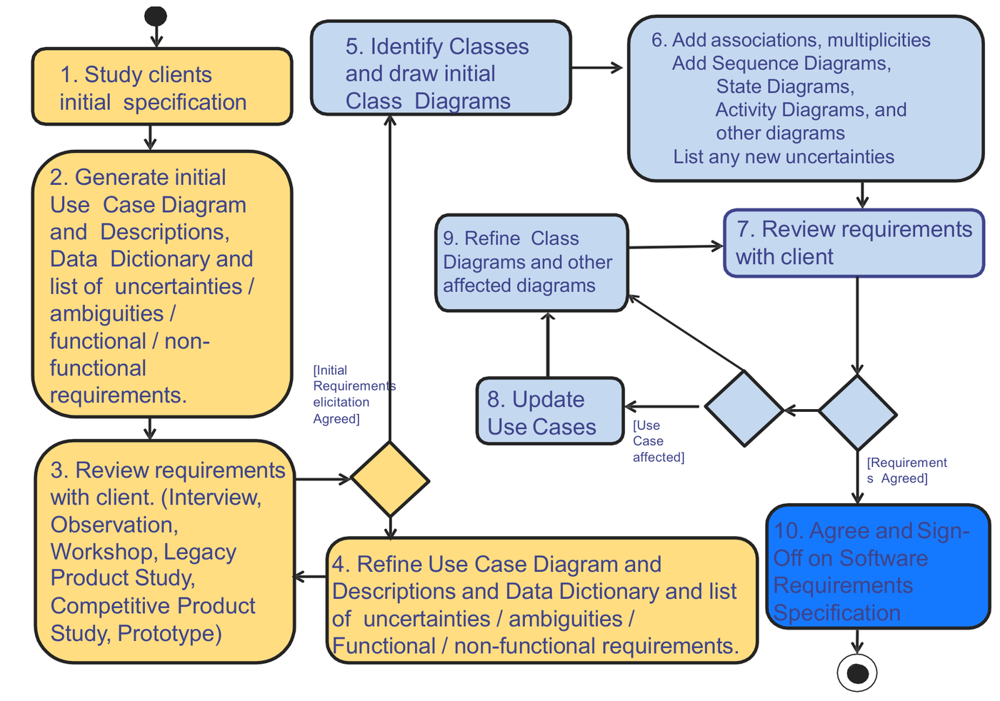

This was written entirely with AI.
The conceptual model shows what the parts of the system are. The dynamic model shows how the system behaves over time. This course uses two dynamic diagrams:
- The state machine diagram shows the states of one object or system and the events that move it from one state to another.
- The activity diagram shows a workflow: the activities, their order, and who does each one.
State machine diagrams
States
A state is a stable condition of a system or an object. The system stays in a state for some time, until an event moves it to another state. Most systems have a limited number of states.
Example: a 2-bit binary counter has 4 states: 00, 01, 10, 11. Each clock signal moves it to the next state.
A state is a box with round corners. It has a name. It can also show:
entry / action— an action that runs once, when the system enters the state;exit / action— an action that runs once, when the system leaves the state;do / activity— an activity that runs for the full time that the system stays in the state.
Transitions
A transition is an arrow from one state to the next. It happens instantly, in response to an event. Its label has three optional parts:
event(arguments) [guard] / action- event: what causes the transition. Example:
insert(c: Coin). - guard: a condition in square brackets. The
transition happens only if the guard is true. Example:
[amount is enough for i]. - action: what the system does during the transition.
Example:
/ log.
A diagram starts at a start node (a filled circle). It ends at an end node (a filled circle inside a ring). A system that runs for ever has no end node.

How to read the figure: the filled dot on the left is the start node.
Its arrow leads into State name 1, so the system starts
there. Each state box has two parts: the name on top and the internal
actions (entry, exit, do) below the line. The arrow from State 1 to
State 2 carries the full label
event(arguments)[guard]/action: when the event happens and
the guard is true, the system does the action and moves to State 2. From
State 2, an arrow with no label goes to the end node (a dot in a ring).
An arrow with no event fires as soon as the state’s do-activity
finishes.
Example: a vending machine

Read it like this:
- At the top,
Power On / Resetleads from the start node into Idle.Power Offleads from Idle to the end node. The machine can be switched off only while it is idle. - In Idle, the amount is set to 0 on entry. The machine shows a greeting while it waits.
insert(c: Coin)moves it to Accumulate. Each extra coin is a self-transition: the loop arrow on the right leaves Accumulate and comes back into it. Because the machine re-enters the state, the entry action runs again and adds the new coin’s value.select(i: item)moves it to Vend, but only if the guard[amount is enough for i]is true. If the guard is false, nothing happens and the machine stays in Accumulate.- In Vend, the entry action subtracts the price. The do-activity dispenses the item.
- After Vend, the two guards decide.
[amount > 0]goes down to ReturnChange.[amount = 0]curves back up to Idle. The two guards cover every case and never overlap, so exactly one arrow fires. - ReturnChange returns the change, then its unlabelled arrow goes back to Idle.
Worked trace with a 50-cent item: insert 20 (Idle → Accumulate, amount = 20), insert 20 (self-transition, amount = 40), insert 20 (amount = 60), select the item (guard true, → Vend, amount = 60 − 50 = 10), amount > 0 so → ReturnChange (return 10), → Idle (amount = 0).
Dialog maps
Many user interfaces are state machines. Only one screen is active at a time (a state). Defined user actions move the user to another screen (a transition). A state machine diagram of the screens is a dialog map.
A dialog map, used with a prototype, helps the team:
- find missing or wrong navigation paths early, when they are cheap to correct;
- find screens that the team can reuse, and screens that repeat each other, before it designs the screens in detail.

How to read the figure:
- Students List is the first screen. Each box is one screen. Each arrow is a user action that changes the screen.
add newmoves the user into Student Details. Student Details is a composite state: a state that holds its own small state machine. Its inner start node points at Personal Info Form, so that form opens first.- Inside,
nextandbackmove between Personal Info, Academic Info and Activity Info. Only one form is open at a time. cancelstarts at the border of Student Details, not at one form. An arrow from the border means “from any sub-state”. So the user can cancel from any of the three forms. You draw it once instead of three times.savestarts at Activity Info Form only. The user can save only after the last form.
Example: a stopwatch

The window on the right is the user interface. The diagram on the left is its dialog map:
- The start node leads to Ready. On entry, Ready resets the time.
Click Startmoves Ready to Continuous Update. Its do-activity displays the elapsed time for as long as the watch runs.Click Stopmoves to Time Paused.Click Startgoes back to Continuous Update and the time continues.Click Resetgoes from Time Paused back to Ready. Note that there is no Reset arrow from Continuous Update. So in this design, the Reset button does nothing while the watch runs.Click Close Windowleaves each of the three states for the end node.
Each state needs its own exit transition for “Click Close Window”. A missing transition means that the user cannot do that action in that state. (A composite state around the three states, with one Close arrow from its border, would say the same thing more compactly.)
Worked example: temporary guest access
A homeowner grants a guest access for a time window. The access becomes active at the start time and expires at the end time. The homeowner can revoke it at any time.

How to read the diagram. The object is one access grant:
- It starts in NoAccess. The event
grant(start, end)can lead to two states, so guards choose:[start > now]goes to Scheduled, and[start <= now]goes straight to Active. startTimeReachedmoves Scheduled to Active.- Active has all three internal actions.
entry / enable guest keyruns once when the grant becomes active.do / accept unlock requestsruns for the whole time it is active.exit / disable guest keyruns once when it leaves, by either exit arrow. unlockRequest / unlock door; logis a self-transition on Active. The grant stays active after each unlock.endTimeReachedmoves Active to Expired, which logs the expiry on entry.revokecan come from Scheduled or from Active and leads to Revoked.- Expired and Revoked are final. Each leads to the end node.
Note what the states are: conditions that last (NoAccess, Scheduled, Active). The verbs (grant, revoke, unlockRequest) are on the arrows.
Method: draw a state machine diagram
- Choose the one object that the question names (a controller, an order, a session).
- List its states. A state is a condition that lasts: “Idle”, “Warming up”, “Active”. It is not an action such as “Push” or “Validate”. If the name is a verb, it is probably an activity, not a state.
- Find the start state and the end state(s).
- For each state, ask: “Which events can happen here?” Draw one transition for each event.
- Add guards where the same event can lead to different states.
- Add entry, exit and do actions where the system does something in a state.
- Check: each state is reachable, and each state has a way out (unless it is final).
Common mistakes:
- Naming an operation as a state (“Push”, “Pop”). A stack has states such as Empty, NotEmpty and Full. Push and pop are events.
- Drawing a flow chart of steps instead of states. That is an activity diagram.
- Forgetting the start node.
- Forgetting the events that are possible from every state (power off, cancel, timeout).
Activity diagrams
An activity diagram is a flow chart of the activities that a system or a business process does.

Tell the four connectors apart by counting arrows. A fork (bar) and a decision (diamond) both have one arrow in and several out, but a fork starts all the outgoing paths, while a decision picks one. A join (bar) and a merge (diamond) both have several in and one out, but a join waits for all incoming paths, while a merge continues as soon as any one arrives.
| Element | Symbol | Meaning |
|---|---|---|
| Activity | Box with round corners | One or more basic operations |
| Control flow | Arrow | The order of activities |
| Decision | Diamond with one input and two or more outputs | Control goes one way, depending on a guard such as
[valid PIN] |
| Merge | Diamond with two or more inputs and one output | Branches come back together |
| Fork | Thick bar with one input and two or more outputs | The activities after it run at the same time |
| Join | Thick bar with two or more inputs and one output | Wait until all incoming flows finish |
| Swimlane | Vertical column with a name | Shows who does each activity |
| Start / end | Filled circle / filled circle in a ring | Start and end of the flow |
Examples
Fork and join: doing the laundry

The large rounded frame names the whole activity: Do Laundry. After Sort Clothes, the first thick bar is a fork: one arrow in, two arrows out. Wash Whites and Wash Darks now run at the same time, in two machines. The second thick bar is a join: two arrows in, one out. Dry Clothes starts only when both washes have finished. The small fork icon in the corner of Dry Clothes means that it has its own detailed diagram, shown next.
Decision and merge: a loop

This is the detail of Dry Clothes. Follow the flow:
- The flow enters at the top diamond. This diamond is a merge: two arrows come in (from the start, and from the loop back), and one goes out.
- Run Dryer.
- The lower diamond is a decision: one arrow in, two
out. Each outgoing arrow has a guard.
[still wet]goes back up to the merge, so the dryer runs again.[else]goes on to Fold Clothes. - After Fold Clothes, the flow ends.
A decision and a merge together make a loop. [else] is a
useful guard: it covers every case that the other guards do not.
Swimlanes: an ATM withdrawal

The three columns are swimlanes: Customer, ATM Machine and Bank. Each activity sits in the lane of whoever does it. Follow the flow:
- Customer: the flow starts. The customer inserts the card and enters the PIN.
- Bank: Authorize. A decision follows.
[invalid PIN]runs down the right side to the merge near the bottom.[valid PIN]goes back to the customer. - Customer: Enter amount. Bank:
Check account balance. Another decision.
[balance < amount]runs down the right side to the merge just above Show balance, so no money is paid.[balance >= amount]goes to a fork. - The fork splits the flow. The customer takes the money from the slot while, at the same time, the bank debits the account.
- The join in the ATM lane waits for both.
- ATM: a merge brings the join and the insufficient-balance path together. The ATM shows the balance.
- A second merge also brings in the invalid-PIN path. On every path, the ATM ejects the card.
- Customer: take the card. The flow ends.
The red labels (start, activity, branch, guard expression, fork, join, merge, end) are the slide’s own annotations, not part of the UML.
Worked example: a guest unlocks the door by voice

How to read the diagram:
- Guest: the flow starts. The guest says “unlock front door”.
- Voice Assistant (LLM): transcribe the speech and
interpret the request. A decision checks the command.
[unclear]: ask a clarifying question, the guest answers, and the flow continues.[clear]: go straight on. The two paths meet at a merge. - SHCS (the smart home control system): check the guest’s access window. A second decision.
[outside window]: deny the request and log the denied attempt.[inside window]: send the unlock signal. Door Lock: unlock the door. SHCS: log the unlock event and confirm to the guest.- The two paths merge, and the flow ends in the guest’s lane.
Note that each decision has a guard on every outgoing arrow, and each lane holds only the actions of that actor or system.
Method: draw an activity diagram with swimlanes
- Make one swimlane for each actor and for the system. Add a lane for each external system or device that does work.
- Put the start node in the lane of the actor who starts the process.
- Write each activity as a short verb phrase in the lane of whoever does it.
- Where the flow depends on a check, add a decision
diamond. Put a guard on each outgoing arrow:
[valid]and[invalid]. - Where activities happen at the same time, use a fork and a join.
- Bring the branches back together with a merge diamond.
- End at an end node. A process can have more than one end node.
Common mistakes:
- Missing guards on the arrows out of a decision.
- A decision with only one outgoing arrow.
- Mixing a fork (same time, all paths) with a decision (one path only).
- No swimlanes when the question says “with swimlanes”.
State machine diagram versus activity diagram
| State machine diagram | Activity diagram | |
|---|---|---|
| Describes | The states of one object or system | The workflow of activities |
| A box is | A condition that lasts (Idle, Active) | Something that is done (Check PIN) |
| An arrow means | An event moves the object to a new state | Control passes to the next activity |
| Use it for | Controllers, sessions, devices, screen navigation (dialog maps) | Business processes, use case flows, algorithms |
The requirements process itself is an activity diagram:

How to read it. The yellow boxes (1–4) are elicitation. The light blue boxes (5–9) are analysis. The dark blue box (10) is the end.
- Study the client’s initial specification.
- Generate the first use case diagram and descriptions, the data dictionary and the list of uncertainties.
- Review the requirements with the client (interview, observation, workshop, legacy and competitive product study, prototype).
- A decision follows. Until the client agrees, refine the use cases and the dictionary (box 4) and review again (back to box 3). This is the loop of steps 1 and 2 in Part 2.
[Initial Requirements elicitation Agreed]: start analysis. Identify the classes and draw the first class diagrams.- Add associations and multiplicities, and add the dynamic diagrams. List new uncertainties.
- Review the requirements with the client again.
- Two decisions follow.
[Use Case affected]: update the use cases (box 8), then refine the class diagrams (box 9), then review again (box 7). If the use cases are not affected, refine the class diagrams directly. [Requirements Agreed]: the client signs off the SRS (box 10). The process ends.